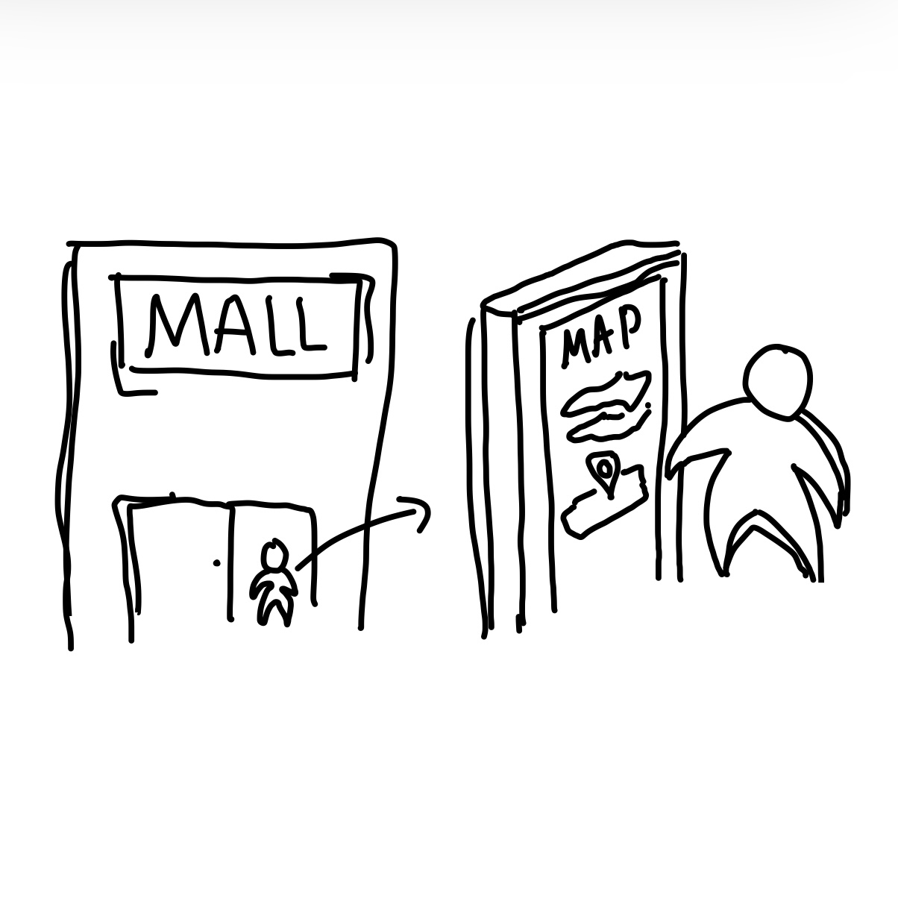
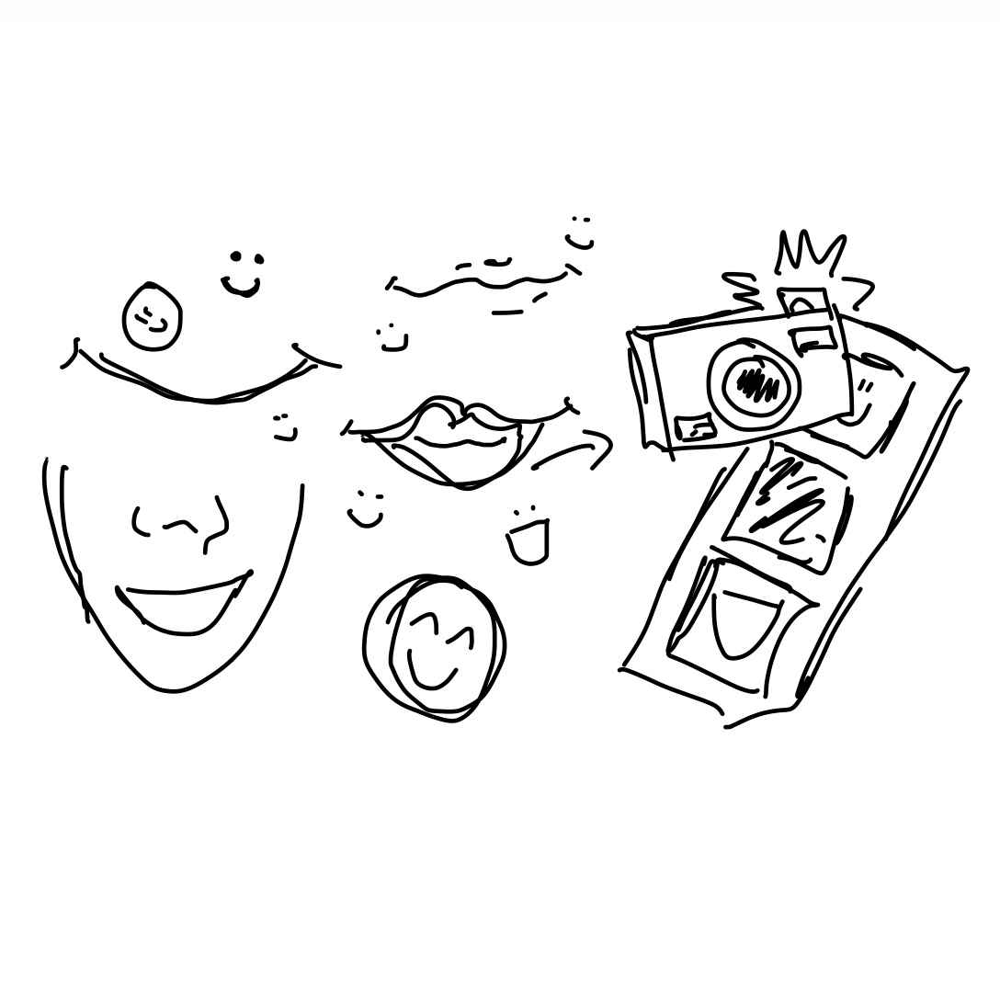
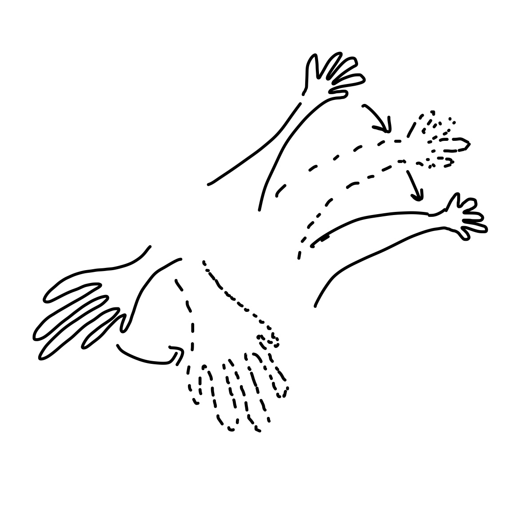

Images
Images can act like many other objects within a P5 sketch. It is interesting that positioning starts from the top left, unless you change
the image mode. adjusting height and width were key aspects of becoming comfortable with images. We also changed images on click.

Webcam
The webcam input is really cool, as seems like you could use it for input of numerous different things, especailly with the handpose, posenet and facemesh add ons.
I struggle with the fact the camera is flipped, so I will definitely be exploring options to reflect that output.

Filters
We experimented with many different filters, such as threshold, invert and posterize. It was interesting to see that
you can pick the level of posterization, in terms of how many colours you limit it to. Invert was hard on the eyes, and threshold was interestingas I hadn't hear that term before.
Filters
Filters are a really cool way to directly impact images in P5 sketches. One thing that was interesting to me
was that it mattered when the filter was applied, and wouldn't work if it is being overwritten or before other code.

Combining to utilise input
We tried combining some of our previous learnings, such as makes shapes and filling them with colour, with the input from our webcams.
This example shows the colour, after posterization, at mouseX and mouse Y from the webcam, drawn as coloured circles in the background.

Images
Images can act like many other objects within a P5 sketch. It is interesting that positioning starts from the top left, unless you change the image mode. adjusting height and width were key aspects of becoming comfortable with images. We also changed images on click.
Webcam
The webcam input is really cool, as seems like you could use it for input of numerous different things, especailly with the handpose, posenet and facemesh add ons. I struggle with the fact the camera is flipped, so I will definitely be exploring options to reflect that output.
Filters
We experimented with many different filters, such as threshold, invert and posterize. It was interesting to see that you can pick the level of posterization, in terms of how many colours you limit it to. Invert was hard on the eyes, and threshold was interestingas I hadn't hear that term before.
Filters
Filters are a really cool way to directly impact images in P5 sketches. One thing that was interesting to me was that it mattered when the filter was applied, and wouldn't work if it is being overwritten or before other code.
Combining to utilise input
We tried combining some of our previous learnings, such as makes shapes and filling them with colour, with the input from our webcams. This example shows the colour, after posterization, at mouseX and mouse Y from the webcam, drawn as coloured circles in the background.